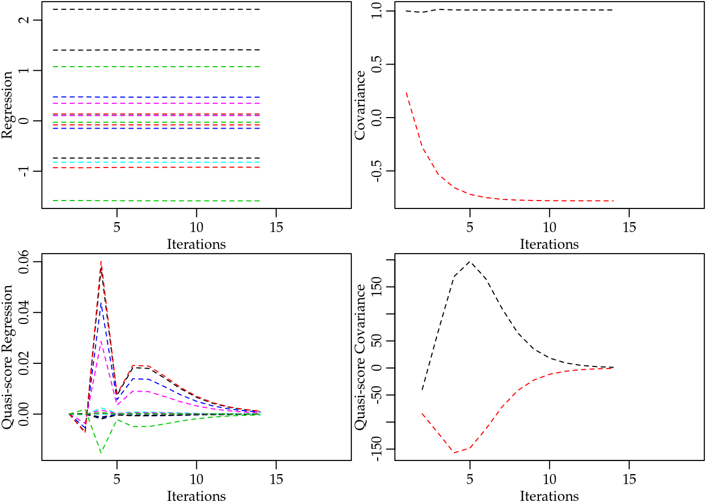
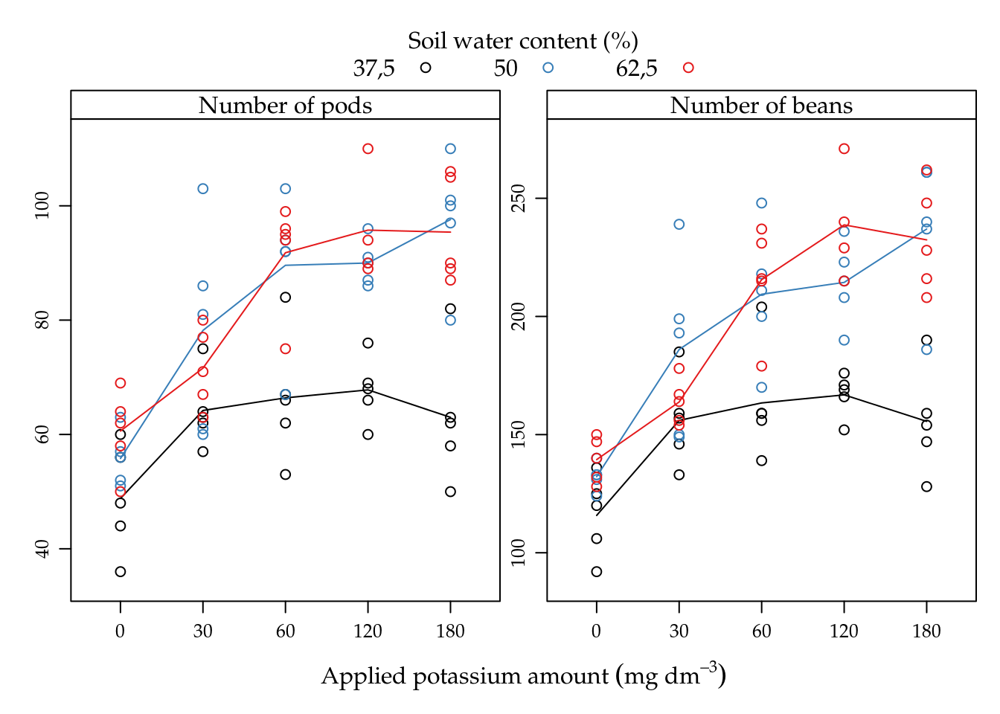

Chapter 5 Applications
In this chapter, we will bring some applications based on real data sets to show how use R packages to analyse count data.
5.1 Cotton Bolls
Cotton production can be drastically reduced by attack of defoliating insects. Depending on the growth stage, the plant can recover from the caused damage and keeps production not affected or can have the production reduced by low intensity defoliation.
A greenhouse experiment with cotton plants (Gossypium hirsutum) was done under a completely randomized design with five replicates to assess the effects of five defoliation levels (0%, 25%, 50%,75% and 100%) on the observed number of bolls produced by plants at five growth stages: vegetative, flower-bud, blossom, fig and cotton boll. The experimental unity was a vase with two plants (Silva et al. 2012, for more). The number of cotton bolls was recorded at the hasvest of the experiment.
library(lattice)
library(latticeExtra)
library(gridExtra)
library(plyr)
library(car)
library(corrplot)
library(doBy)
library(multcomp)
library(mcglm)
library(MRDCr)
ls("package:MRDCr")## [1] "apc" "calc_mean_cmp"
## [3] "calc_mean_gcnt" "calc_var_cmp"
## [5] "cambras" "capdesfo"
## [7] "capmosca" "cmp"
## [9] "conftemp" "confterm"
## [11] "convergencez" "dcmp"
## [13] "dgcnt" "dpgnz"
## [15] "gcnt" "led"
## [17] "llcmp" "llgcnt"
## [19] "llpgnz" "nematoide"
## [21] "ninfas" "panel.beeswarm"
## [23] "panel.cbH" "panel.groups.segplot"
## [25] "peixe" "pgnz"
## [27] "postura" "prepanel.cbH"
## [29] "seguros" "soja"# Documentation in Portuguese.
help(capdesfo, help_type = "html")str(capdesfo)## 'data.frame': 125 obs. of 4 variables:
## $ est : Factor w/ 5 levels "vegetativo","botão floral",..: 1 1 1 1 1 1 1 1 1 1 ...
## $ des : num 0 0 0 0 0 0.25 0.25 0.25 0.25 0.25 ...
## $ rept: int 1 2 3 4 5 1 2 3 4 5 ...
## $ ncap: int 10 9 8 8 10 11 9 10 10 10 ...levels(capdesfo$est) <- c("vegetative",
"flower-bud",
"blossom",
"fig",
"cotton boll")
xtabs(~est + des, data = capdesfo)## des
## est 0 0.25 0.5 0.75 1
## vegetative 5 5 5 5 5
## flower-bud 5 5 5 5 5
## blossom 5 5 5 5 5
## fig 5 5 5 5 5
## cotton boll 5 5 5 5 5Figure 5.1 (top) shows the beeswarm plot of number of cotton bolls recorded for each combination of defoliation level and growth stage. All the points in the sample means and variances dispersion diagram (bottom) are below the identity line, clearly suggesting data with underdispersion.

Figure 5.1: (top) Number of bolls produced for each artificial defoliation level and each growth stage. (bottom) Sample variance against the sample mean of the five replicates for each combination of defoliation level and growth stage.
The exploratory data analysis, although simple, was able to detect departures from the Poisson equidispersion assumption. So, we have in advance few conditions met for the use of GLM Poisson as a regression model to analyse this experiment.
Poisson, as being a process derived from the memoryless waiting times Exponential distribuition, implies that each boll is an independent event in the artificial subjacent domain, that can be thought was the natural resource domain that the plant has to allocate bolls. Its is easy to assume, based on plant fisiology, that the probability of a boll decreases with the number of previous bolls because the plant’s resource to produce bolls is limited and it is a non memoryless process equivalent.
Based on the exploratory data analysis, a predictor with 2nd order effect of defoliation for each growth stage should be enough to model the number of bolls mean in a regression model. The analysis and assessment of the effects of the experimental factors are based on the Poisson, Gamma-count and Poisson Tweedie models.
m0 <- glm(ncap ~ est * (des + I(des^2)),
data = capdesfo,
family = poisson)
summary(m0)##
## Call:
## glm(formula = ncap ~ est * (des + I(des^2)), family = poisson,
## data = capdesfo)
##
## Deviance Residuals:
## Min 1Q Median 3Q Max
## -1.0771 -0.3098 -0.0228 0.2704 1.1665
##
## Coefficients:
## Estimate Std. Error z value Pr(>|z|)
## (Intercept) 2.2142 0.1394 15.89 <2e-16 ***
## estflower-bud -0.0800 0.2007 -0.40 0.69
## estblossom -0.0272 0.2001 -0.14 0.89
## estfig -0.1486 0.2051 -0.72 0.47
## estcotton boll 0.1129 0.1922 0.59 0.56
## des 0.3486 0.6805 0.51 0.61
## I(des^2) -0.7384 0.6733 -1.10 0.27
## estflower-bud:des 0.1364 0.9644 0.14 0.89
## estblossom:des -1.5819 1.0213 -1.55 0.12
## estfig:des 0.4755 1.0194 0.47 0.64
## estcotton boll:des -0.8210 0.9395 -0.87 0.38
## estflower-bud:I(des^2) 0.1044 0.9447 0.11 0.91
## estblossom:I(des^2) 1.4044 1.0191 1.38 0.17
## estfig:I(des^2) -0.9294 1.0323 -0.90 0.37
## estcotton boll:I(des^2) 1.0757 0.9210 1.17 0.24
## ---
## Signif. codes: 0 '***' 0.001 '**' 0.01 '*' 0.05 '.' 0.1 ' ' 1
##
## (Dispersion parameter for poisson family taken to be 1)
##
## Null deviance: 75.514 on 124 degrees of freedom
## Residual deviance: 25.331 on 110 degrees of freedom
## AIC: 539.7
##
## Number of Fisher Scoring iterations: 4logLik(m0)## 'log Lik.' -255 (df=15)We fit the GLM Poisson regression model using the stardard glm() function in R. The fitted model summary shows the estimated parameters for the second order effect of defoliation crossed with growth stages levels. The residual deviance was 25.33 based on 110 degrees of freedoom. The ratio \(25.33/110 = 0.23\) is a strong evidence against Poisson equidispersion assumption that uses a dispersion parameter equals 1.
anova(m0, test = "Chisq")## Analysis of Deviance Table
##
## Model: poisson, link: log
##
## Response: ncap
##
## Terms added sequentially (first to last)
##
##
## Df Deviance Resid. Df Resid. Dev Pr(>Chi)
## NULL 124 75.5
## est 4 19.96 120 55.6 0.00051 ***
## des 1 15.86 119 39.7 6.8e-05 ***
## I(des^2) 1 1.29 118 38.4 0.25557
## est:des 4 6.71 114 31.7 0.15212
## est:I(des^2) 4 6.36 110 25.3 0.17388
## ---
## Signif. codes: 0 '***' 0.001 '**' 0.01 '*' 0.05 '.' 0.1 ' ' 1The analysis of deviance table did not stated effect of any interactions, neither second order effect of defiliation. Although, all these effects are noticeable in Figure ??.

Figure 5.2: The 4 plots for checking departures of assumptions in the GLM-Poisson regression.
Figure ?? displays the four residual plots for the fitted model. Based on these plots, there is no concern about mispecifications regarding to the model predictor or influential observations. The only remarkable aspect is about the range of the stardartized deviance residuals quite distant from the expected -3 to 3 from the normal distribution. Once more, these is another measure indicating a underdispersed count data.
The gcnt() is a function defined in the MRDCr package (Walmes Marques Zeviani, Junior, and Taconeli 2016) to fit the Gamma-Count regression model. This function fits a GML-Poisson to use the estimates as initial values to optimize Gamma-Count likelihood using optim() through bblme package (Bolker and Team 2016).
m1 <- gcnt(ncap ~ est * (des + I(des^2)),
data = capdesfo)
summary(m1)## Maximum likelihood estimation
##
## Call:
## bbmle::mle2(minuslogl = llgcnt, start = start, data = list(y = y,
## X = X, offset = off), vecpar = TRUE)
##
## Coefficients:
## Estimate Std. Error z value Pr(z)
## alpha 1.7110 0.1352 12.66 < 2e-16 ***
## (Intercept) 2.2580 0.0593 38.05 < 2e-16 ***
## estflower-bud -0.0765 0.0854 -0.90 0.37025
## estblossom -0.0253 0.0851 -0.30 0.76616
## estfig -0.1398 0.0872 -1.60 0.10885
## estcotton boll 0.1084 0.0818 1.33 0.18476
## des 0.3294 0.2896 1.14 0.25543
## I(des^2) -0.6997 0.2866 -2.44 0.01464 *
## estflower-bud:des 0.1337 0.4105 0.33 0.74456
## estblossom:des -1.5020 0.4345 -3.46 0.00055 ***
## estfig:des 0.4218 0.4336 0.97 0.33062
## estcotton boll:des -0.7820 0.3998 -1.96 0.05046 .
## estflower-bud:I(des^2) 0.0943 0.4021 0.23 0.81452
## estblossom:I(des^2) 1.3382 0.4335 3.09 0.00202 **
## estfig:I(des^2) -0.8333 0.4390 -1.90 0.05768 .
## estcotton boll:I(des^2) 1.0222 0.3920 2.61 0.00911 **
## ---
## Signif. codes: 0 '***' 0.001 '**' 0.01 '*' 0.05 '.' 0.1 ' ' 1
##
## -2 log L: 408During the optimization process for this dataset, optim() has found NaN when evaluating the likelihood. This occurs due little numerical precision to calculate the difference of Gamma CDFs on tails or for extreme values, resulting in numerical zeros and corresponding -Inf log-likelihood. This is a numerical problem that can narrow, or make things difficult, the use of Gamma-Count regression model.
The dispersion parameter is the first position in the parameter vector. The optimization was carried out on the log scale to avoid problems regarding to bounded parameter spaces. As the dispersion parameter is in fact interpreted as a precision coefficient, the positive estimate indicates an underdispersed count. According to the \(z\) statistic, \(\hat{alpha}\) is significantly different from zero (Poisson case). Poisson is special case of Gamma-Count when \(\alpha = 0\), so we can perform a likelihood ratio test to the hypothesis \(H_0: \alpha = 0\).
# Likelihood ratio test.
chi <- 2 * (logLik(m1) - logLik(m0))
pval <- 2 * pchisq(chi, df = 1, lower.tail = FALSE)
cat("Likelihood Ratio Test\n",
"Chisq:\t\t ", chi, "\n",
"Pr(>Chisq):\t ", pval, "\n",
sep = "")## Likelihood Ratio Test
## Chisq: 102
## Pr(>Chisq): 1.01e-23# Log-likelihood profile for alpha.
plot(profile(m1, which = "alpha"))
cbind(c(0, coef(m0)), coef(m1))## [,1] [,2]
## 0.0000 1.7110
## (Intercept) 2.2142 2.2580
## estflower-bud -0.0800 -0.0765
## estblossom -0.0272 -0.0253
## estfig -0.1486 -0.1398
## estcotton boll 0.1129 0.1084
## des 0.3486 0.3294
## I(des^2) -0.7384 -0.6997
## estflower-bud:des 0.1364 0.1337
## estblossom:des -1.5819 -1.5020
## estfig:des 0.4755 0.4218
## estcotton boll:des -0.8210 -0.7820
## estflower-bud:I(des^2) 0.1044 0.0943
## estblossom:I(des^2) 1.4044 1.3382
## estfig:I(des^2) -0.9294 -0.8333
## estcotton boll:I(des^2) 1.0757 1.0222rstd <- summary(m1)@coef[-1, 2]/summary(m0)$coeff[, 2]
plyr::each(mean, range)(rstd)## mean range1 range2
## 0.426 0.425 0.426The estimates for the location parameters were very close. The ratio between Gamma-Count parameters standard error and Poisson ones, on the other hand, were 0.426 for all estimates, for 3 decimals of precision. This leads to the conclusion that TODO relação linear no parâmetro de dispersão.
# Wald test for the interaction.
a <- c(0, attr(model.matrix(m0), "assign"))
ai <- a == max(a)
L <- t(replicate(sum(ai), rbind(coef(m1) * 0), simplify = "matrix"))
L[, ai] <- diag(sum(ai))
linearHypothesis(model = m0, # m0 is not being used here.
hypothesis.matrix = L,
vcov. = vcov(m1),
coef. = coef(m1))## Linear hypothesis test
##
## Hypothesis:
## estflower - bud:I(des^2) = 0
## estblossom:I(des^2) = 0
## estfig:I(des^2) = 0
## estcotton boll:I(des^2) = 0
##
## Model 1: restricted model
## Model 2: ncap ~ est * (des + I(des^2))
##
## Note: Coefficient covariance matrix supplied.
##
## Res.Df Df Chisq Pr(>Chisq)
## 1 114
## 2 110 4 30.5 3.8e-06 ***
## ---
## Signif. codes: 0 '***' 0.001 '**' 0.01 '*' 0.05 '.' 0.1 ' ' 1# Fitting Poisson-Tweedie model.
m2 <- mcglm(linear_pred = c(ncap ~ est * (des + I(des^2))),
matrix_pred = list(mc_id(data = capdesfo)),
link = "log",
variance = "poisson_tweedie",
power_fixed = FALSE,
data = capdesfo,
control_algorithm = list(verbose = FALSE,
max_iter = 100,
tunning = 0.5,
correct = FALSE))## Automatic initial values selected.# Parameter estimates.
summary(m2)## Call: ncap ~ est * (des + I(des^2))
##
## Link function: log
## Variance function: poisson_tweedie
## Covariance function: identity
## Regression:
## Estimates Std.error Z value
## (Intercept) 2.2143 0.0627 35.308
## estflower-bud -0.0800 0.0904 -0.886
## estblossom -0.0265 0.0900 -0.294
## estfig -0.1485 0.0924 -1.607
## estcotton boll 0.1128 0.0864 1.306
## des 0.3486 0.3065 1.137
## I(des^2) -0.7385 0.3037 -2.432
## estflower-bud:des 0.1361 0.4345 0.313
## estblossom:des -1.5875 0.4612 -3.442
## estfig:des 0.4693 0.4602 1.020
## estcotton boll:des -0.8204 0.4228 -1.940
## estflower-bud:I(des^2) 0.1048 0.4259 0.246
## estblossom:I(des^2) 1.4098 0.4609 3.059
## estfig:I(des^2) -0.9205 0.4671 -1.971
## estcotton boll:I(des^2) 1.0752 0.4149 2.592
##
## Power:
## Estimates Std.error Z value
## 1 1.01 0.136 7.43
##
## Dispersion:
## Estimates Std.error Z value
## 1 -0.781 0.217 -3.59
##
## Algorithm: chaser
## Correction: FALSE
## Number iterations: 14plot(m2, type = "algorithm")
# Wald test for fixed effects.
anova(m2)## Wald test for fixed effects
## Call: ncap ~ est * (des + I(des^2))
##
## Covariate Chi.Square Df p.value
## 1 estflower-bud 9.54 4 0.0489
## 2 des 1.29 1 0.2555
## 3 I(des^2) 5.91 1 0.0150
## 4 estflower-bud:des 25.00 4 0.0001
## 5 estflower-bud:I(des^2) 30.72 4 0.0000# New data values for prediction.
pred <- with(capdesfo,
expand.grid(est = levels(est),
des = seq(0, 1, length.out = 30)))
# Corresponding model matrix.
X <- model.matrix(formula(m0)[-2], data = pred)
#--------------------------------------------
# Poisson.
yp <- predict(m0, newdata = pred, se.fit = TRUE)
em <- outer(yp$se.fit,
c(lwrP = -1, fitP = 0, uprP = 1) * qnorm(0.975),
FUN = "*")
ci <- sweep(em, MARGIN = 1, STATS = yp$fit, FUN = "+")
ci <- m0$family$linkinv(ci)
pred <- cbind(pred, as.data.frame(ci))
str(pred)## 'data.frame': 150 obs. of 5 variables:
## $ est : Factor w/ 5 levels "vegetative","flower-bud",..: 1 2 3 4 5 1 2 3 4 5 ...
## $ des : num 0 0 0 0 0 ...
## $ lwrP: num 6.97 6.37 6.72 5.88 7.91 ...
## $ fitP: num 9.15 8.45 8.91 7.89 10.25 ...
## $ uprP: num 12 11.2 11.8 10.6 13.3 ...# xyplot(fitP + lwrP + uprP ~ des | )TODO: pares de estimativa e erros padrões.
5.2 Soybean pod and beans
The tropical soils, usually poor in potassium (K), demand potassium fertilization when cultivated with soybean (Glycine max L.) to obtain satisfactory yields. Soybean production is affected by long exposition to water deficit. As postassium is a nutrient involved in the water balance in plant, by hyphotesis, a good supply of potassium avoids lose production.
The aim of this study was to evaluate the effects of K doses and soil humidity levels on soybean production. The experiment was carried out in a greenhouse, in pots with two plants, containing 5 dm3 of soil. The experimental design was completely randomized block with treatments in a 5 x 3 factorial arrangement. The K doses were 0, 30, 60, 120 and 180 mg dm-3 , and the soil humidity ranged from 35 to 40, 47.5 to 52.5, and 60 to 65% of the total porosity.
str(soja)## 'data.frame': 75 obs. of 5 variables:
## $ K : int 0 30 60 120 180 0 30 60 120 180 ...
## $ umid: Factor w/ 3 levels "37,5","50","62,5": 1 1 1 1 1 2 2 2 2 2 ...
## $ bloc: Factor w/ 5 levels "I","II","III",..: 1 1 1 1 1 1 1 1 1 1 ...
## $ ngra: int 136 159 156 171 190 140 193 200 208 237 ...
## $ nvag: int 56 62 66 68 82 63 86 94 86 97 ...# Removing an outlier.
soja <- soja[-74, ]
soja <- transform(soja, K = factor(K))5.2.1 Number of pods
#-----------------------------------------------------------------------
# Carregando e explorando os dados.
xyplot(nvag + ngra ~ K,
groups = umid,
outer = TRUE,
data = soja,
type = c("p", "a"),
scales = "free",
ylab = NULL,
xlab = expression("Applied potassium amount" ~ (mg ~ dm^{-3})),
auto.key = list(title = "Soil water content (%)",
cex.title = 1,
columns = 3),
strip = strip.custom(
factor.levels = c("Number of pods",
"Number of beans")))
#--------------------------------------------
# Poisson.
m0 <- glm(nvag ~ bloc + umid * K,
data = soja,
family = poisson)
## # Checking residuals.
## par(mfrow = c(2, 2))
## plot(m0); layout(1)
#--------------------------------------------
# Gamma-Count.
m1 <- gcnt(formula(m0), data = soja)
#--------------------------------------------
# Tweedie.
m2 <- mcglm(linear_pred = c(nvag ~ bloc + umid * K),
matrix_pred = list(mc_id(data = soja)),
link = "log",
variance = "poisson_tweedie",
power_fixed = TRUE,
data = soja,
control_algorithm = list(verbose = FALSE,
max_iter = 100,
tunning = 0.5,
correct = FALSE))## Automatic initial values selected.#-----------------------------------------------------------------------
# Comparing models.
# Log-likelihood.
c(P = logLik(m0), GC = logLik(m1), TW = NA)## P GC TW
## -260 -259 NAc0 <- summary(m0)$coefficients[, 1:2]
c1 <- summary(m1)@coef[, 1:2]
c2 <- rbind(summary(m2)[[1]]$tau[, 1:2],
summary(m2)[[1]]$Regression[, 1:2])# Parameter estimates according to each model.
c0 <- cbind("P" = rbind(0, c0),
"GC" = c1,
"TW" = c2)
colnames(c0) <- substr(colnames(c0), 1, 6)
round(c0, digits = 6)## P.Esti P.Std. GC.Est GC.Std TW.Est TW.Std
## 0.0000 0.0000 0.1288 0.1655 -0.1088 0.1458
## (Intercept) 3.9537 0.0689 3.9549 0.0646 3.9537 0.0651
## blocII -0.0293 0.0409 -0.0293 0.0383 -0.0293 0.0386
## blocIII -0.0727 0.0414 -0.0726 0.0388 -0.0727 0.0390
## blocIV -0.1254 0.0419 -0.1253 0.0393 -0.1254 0.0396
## blocV -0.1079 0.0430 -0.1079 0.0403 -0.1079 0.0406
## umid50 0.1340 0.0877 0.1339 0.0822 0.1340 0.0827
## umid62,5 0.2166 0.0860 0.2163 0.0806 0.2166 0.0812
## K30 0.2743 0.0849 0.2740 0.0796 0.2743 0.0802
## K60 0.3080 0.0843 0.3076 0.0790 0.3080 0.0796
## K120 0.3288 0.0840 0.3285 0.0787 0.3288 0.0793
## K180 0.2554 0.0853 0.2551 0.0799 0.2554 0.0805
## umid50:K30 0.0632 0.1156 0.0632 0.1083 0.0632 0.1091
## umid62,5:K30 -0.1075 0.1154 -0.1073 0.1081 -0.1075 0.1089
## umid50:K60 0.1656 0.1137 0.1655 0.1066 0.1656 0.1073
## umid62,5:K60 0.1074 0.1122 0.1073 0.1052 0.1074 0.1059
## umid50:K120 0.1492 0.1134 0.1491 0.1063 0.1492 0.1070
## umid62,5:K120 0.1184 0.1140 0.1184 0.1069 0.1184 0.1077
## umid50:K180 0.3037 0.1136 0.3035 0.1065 0.3037 0.1072
## umid62,5:K180 0.1984 0.1126 0.1983 0.1055 0.1984 0.1063# Likelihhod profile for Gamma-Count dispersion parameter.
plot(profile(m1, which = "alpha"))
abline(v = 0, lty = 2)
# V <- cov2cor(vcov(m1))
# corrplot.mixed(V,
# lower = "number",
# upper = "ellipse",
# diag = "l",
# tl.pos = "lt",
# tl.col = "black",
# tl.cex = 0.8,
# col = brewer.pal(9, "Greys")
# [-(1:3)]) dev.off()
# Analysis of deviance table.
anova(m0, test = "Chisq")## Analysis of Deviance Table
##
## Model: poisson, link: log
##
## Response: nvag
##
## Terms added sequentially (first to last)
##
##
## Df Deviance Resid. Df Resid. Dev Pr(>Chi)
## NULL 73 323
## bloc 4 14.3 69 308 0.0064 **
## umid 2 92.9 67 215 <2e-16 ***
## K 4 136.1 63 79 <2e-16 ***
## umid:K 8 14.2 55 65 0.0779 .
## ---
## Signif. codes: 0 '***' 0.001 '**' 0.01 '*' 0.05 '.' 0.1 ' ' 1# Wald test for interaction.
a <- c(0, attr(model.matrix(m0), "assign"))
ai <- a == max(a)
L <- t(replicate(sum(ai), rbind(coef(m1) * 0), simplify = "matrix"))
L[, ai] <- diag(sum(ai))
linearHypothesis(model = m0, # m0 is not being used here.
hypothesis.matrix = L,
vcov. = vcov(m1),
coef. = coef(m1))## Linear hypothesis test
##
## Hypothesis:
## umid50:K30 = 0
## umid62,5:K30 = 0
## umid50:K60 = 0
## umid62,5:K60 = 0
## umid50:K120 = 0
## umid62,5:K120 = 0
## umid50:K180 = 0
## umid62,5:K180 = 0
##
## Model 1: restricted model
## Model 2: nvag ~ bloc + umid * K
##
## Note: Coefficient covariance matrix supplied.
##
## Res.Df Df Chisq Pr(>Chisq)
## 1 63
## 2 55 8 16 0.043 *
## ---
## Signif. codes: 0 '***' 0.001 '**' 0.01 '*' 0.05 '.' 0.1 ' ' 1# Wald test for fixed effects.
anova(m2)## Wald test for fixed effects
## Call: nvag ~ bloc + umid * K
##
## Covariate Chi.Square Df p.value
## 1 blocII 13.92 4 0.0076
## 2 umid50 7.15 2 0.0280
## 3 K30 20.93 4 0.0003
## 4 umid50:K30 15.76 8 0.0459
5.2.2 Númber of grains
#-----------------------------------------------------------------------
xyplot(ngra ~ K | umid, data = soja, layout = c(NA, 1),
type = c("p", "smooth"),
ylab = "Número de grãos por parcela",
xlab = expression("Dose de potássio aplicada"~(mg ~ dm^{3})),
strip = strip.custom(strip.names = TRUE, var.name = "Umidade"))soja$off <- 10
fivenum(with(soja, ngra/off))## [1] 9.2 14.7 17.1 21.6 27.15.2.3 Number of grains per pod
5.3 Number of vehicle claims
5.4 Radiation-induced chromosome aberration counts
## The density of PTW dsitributions (using numerical integration)
library(statmod)
library(tweedie)
integrand <- function(x, y, mu, phi, power) {
int = dpois(y, lambda = x)*
dtweedie(x, mu = mu, phi = phi, power = power)
return(int)
}
# Numerical integration using Gauss-Laguerre method
gauss_laguerre <- function(integrand, n_pts, y, mu, phi, power) {
pts <- gauss.quad(n_pts, kind="laguerre")
integral <- sum(pts$weights*integrand(pts$nodes, y = y, mu = mu,
phi = phi, power = power)/
exp(-pts$nodes))
return(integral)
}
gauss_laguerre_vec <- Vectorize(FUN = gauss_laguerre,
vectorize.args = "y")
# Numerical integration using Monte Carlo method -----------------------
monte_carlo <- function(integrand, n_pts, y, mu, phi, power) {
pts <- rtweedie(n_pts, mu = mu, phi = phi, power = power)
norma <- dtweedie(pts, mu = mu, phi = phi, power = power)
integral <- mean(integrand(pts, y = y, mu = mu, phi = phi,
power = power)/norma)
return(integral)
}
# Probability mass function Poisson-Tweedie ----------------------------
dptweedie_aux <- function(y, mu, phi, power, n_pts, method) {
if(method == "laguerre" | y > 0) {
pmf <- gauss_laguerre(integrand = integrand, n_pts = n_pts,
y = y, mu = mu, phi = phi, power = power)
}
if(method == "laguerre" & y == 0) {
v.y <- round(10*sqrt(mu + phi*mu^power),0)
if(v.y > 1000) {v.y <- 1000}
#print(v.y)
y.grid <- 0:v.y
temp <- gauss_laguerre_vec(integrand = integrand, n_pts = n_pts,
y = y.grid, mu = mu, phi = phi,
power = power)
pmf <- 1-sum(temp)+temp[1]
}
if(method == "MC") {
pmf <- monte_carlo(integrand = integrand, n_pts = n_pts,
y = y, mu = mu, phi = phi, power = power)
}
return(pmf)
}
# Vectorize version
dptweedie <- Vectorize(FUN = dptweedie_aux, vectorize.args = c("y","mu"))In biological dosimetry studies essentially the response variables are data counts. These experiments measure the number of chromosome aberrations in human lymphocytes after to controlled exposure of ionizing radiation. The aim of the studies are analyse the biological effects induced by ionizing radiation. The aberrations most commonly mensured are the dicentrics, centric rings, and micronucle .
In this section the dataset considered was obtained after irradiating blood samples with five different doses between 0.1 and 1 Gy of 2.1 MeV neutrons. In this case, the frequencies of dicentrics and centric rings after a culture of 72 hours are analysed. The dataset was analysed by (???), as an example of zero-inflated data and Bonat et al. (2016), using extend Poisson-Tweedie approach.
The data are available in data/chromossome.rda file. In R it can be loaded with
##----------------------------------------------------------------------
## Load
load("./data/chromosome.rda")
str(chromosome)## 'data.frame': 5232 obs. of 2 variables:
## $ ndic: num 0 0 0 0 0 0 0 0 0 0 ...
## $ dose: num 0.1 0.1 0.1 0.1 0.1 0.1 0.1 0.1 0.1 0.1 ...The Figure 5.3 shows the frequencies chromosome aberrations (left) and average of chromosome aberrations by radiation doses (right). Note that the highest frequencies are observed for zero counts and the averages are between 0 and 1, suggesting excess zero.

Figure 5.3: Observed frequencies of the chromosome aberrations counts by radiation doses (left) and means of chromosome aberrations for each radiation doses (right).
##----------------------------------------------------------------------
## Modelling
form <- ndic ~ dose + I(dose^2)
m0PO <- glm(form, family = poisson, data = chromosome)
m0GC <- gcnt(form, data = chromosome)
m0CP <- cmp(form, data = chromosome, sumto = 100)
m0PT <- mcglm(
linear_pred = c(form),
matrix_pred = list(mc_id(chromosome)),
link = "log",
variance = "poisson_tweedie",
power_fixed = FALSE,
data = chromosome,
control_algorithm = list(
verbose = FALSE, max_iter = 1000,
tunning = 0.5, tol = 1e-10)
)## Automatic initial values selected.##----------------------------------------------------------------------
## Goodness of fit
## Compute logLik for Poisson-Tweedie
## ** especific for this example
logLik.mcglm <- function(object) {
y <- c(0:5, 7)
data <- data.frame(dose = unique(chromosome$dose))
## ---
form <- update(object$linear_pred[[1]], NULL ~ .)
X <- model.matrix(form, data)
mu <- exp(X %*% coef(object, type = "beta")$Estimates)
phi <- with(coef(object), Estimates[Type == "tau"])
power <- with(coef(object), Estimates[Type == "power"])
obs <- xtabs(~ndic + dose, data = chromosome)
matpred <- do.call("cbind", lapply(mu, function(mui) {
dptweedie(y = y, mu = mui, phi = phi, power = power,
n_pts = 180, "laguerre")
}))
ll <- sum(log(matpred) * obs)
attr(ll, "df") <- nrow(coef(object))
attr(ll, "nobs") <- m0PT$n_obs
class(ll) <- "logLik"
return(ll)
}
## Compute table of gof
models <- list("Poisson" = m0PO, "Gamma-Count" = m0GC,
"COM-Poisson" = m0CP, "POisson-Tweedie" = m0PT)
(measures <- sapply(models, function(x)
c("LogLik" = logLik(x), "AIC" = AIC(x), "BIC" = BIC(x))))## Poisson Gamma-Count COM-Poisson POisson-Tweedie
## LogLik -2995 -2966 -2967 -2951
## AIC 5997 5940 5943 5911
## BIC 6016 5966 5969 5944cap <- paste("Dispersion diagram of observed chromossome aberrations and",
"curves of predict values an confidence intervals (95\\%)",
"based on Poisson, Gamma-Count, COM-Poisson and",
"Poisson-Tweedie regression models.")
##-------------------------------------------
## Visualize means
## pred2 <- subset(preds, model %in% c("PO", "PT"))
xyplot(fit ~ dose,
data = preds,
groups = model,
type = c("g", "l"),
ly = preds$lwr, uy = preds$upr,
layout = c(NA, 1),
as.table = TRUE,
alpha = 0.2,
xlab = "Radiation doses",
ylab = "Mean of chromosomic aberrations",
auto.key = list(
columns = 2,
lines = TRUE,
points = FALSE,
text = c("Poisson", "Gamma-Count",
"COM-Poisson", "Poisson-Tweedie")
),
cty = "bands", fill = "gray80",
panel = panel.superpose,
panel.groups = panel.cbH,
prepanel = prepanel.cbH) +
as.layer(
update(xy2, type = "p")
)
Figure 5.4: Dispersion diagram of observed chromossome aberrations and curves of predict values an confidence intervals (95%) based on Poisson, Gamma-Count, COM-Poisson and Poisson-Tweedie regression models.
##-------------------------------------------
## Calcule probabilities
index <- preds$dose %in% unique(chromosome$dose)
means <- preds[index, c("model", "dose", "fit")]
probs <- list()
y <- 0:5
## Poisson model
indPO <- grep("PO", means$model)
probs$PO <- do.call(
"rbind",
lapply(indPO, function(i) {
with(means, {
py <- dpois(y, fit[i])
data.frame(dose = dose[i], y = y, prob = py)
})
})
)
## Gamma-Count model
indGC <- grep("GC", means$model)
alpha <- exp(coef(m0GC)["alpha"])
probs$GC <- do.call(
"rbind",
lapply(indGC, function(i) {
with(means, {
aux <- predict(m0GC, newdata = t(cbind(X[i, ])),
type = "link")
lambda <- alpha %*% exp(aux)
py <- dgcnt(y, lambda = lambda, alpha = alpha)
data.frame(dose = dose[i], y = y, prob = py)
})
})
)
## COM-Poisson model
indCP <- grep("CP", means$model)
nu <- exp(coef(m0CP)["phi"])
sumto <- m0CP@data$sumto
probs$CP <- do.call(
"rbind",
lapply(indCP, function(i) {
with(means, {
aux <- predict(m0CP, newdata = t(cbind(X[i, ])),
type = "link")
lambda <- exp(aux)
py <- dcmp(y, lambda = lambda, nu = nu, sumto = sumto)
data.frame(dose = dose[i], y = y, prob = py)
})
})
)
## Poisson-Tweedie model
indPT <- grep("PT", means$model)
phi <- with(coef(m0PT), Estimates[Type == "tau"])
power <- with(coef(m0PT), Estimates[Type == "power"])
probs$PT <- do.call(
"rbind",
lapply(indPT, function(i) {
with(means, {
py <- dptweedie(y = y, mu = fit[i], phi = phi,
power = power, n_pts = 180,
method = "laguerre")
data.frame(dose = dose[i], y = y, prob = py)
})
})
)
## Visualize the probabilities
daprobs <- ldply(probs, .id = "model")
barchart(prob ~ y | factor(dose), groups = model,
data = daprobs,
horizontal = FALSE,
axis = axis.grid,
as.table = TRUE,
origin = 0,
xlab = "Number of chromosomic aberrations",
ylab = "Probability",
scales = list(x = list(labels = y)),
auto.key = list(
columns = 2,
text = c("Poisson", "Gamma-Count",
"COM-Poisson", "Poisson-Tweedie")
),
strip = strip.custom(
strip.name = TRUE,
var.name = "dose",
sep = " = "
))